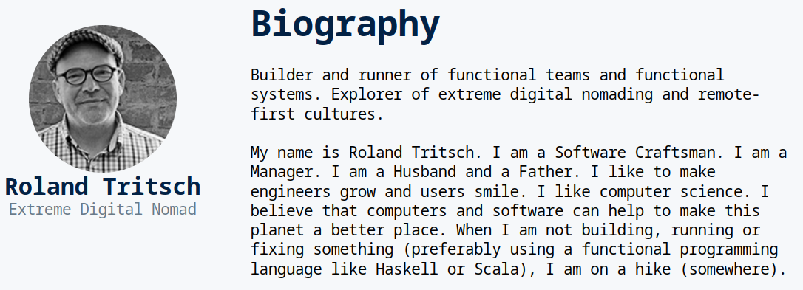
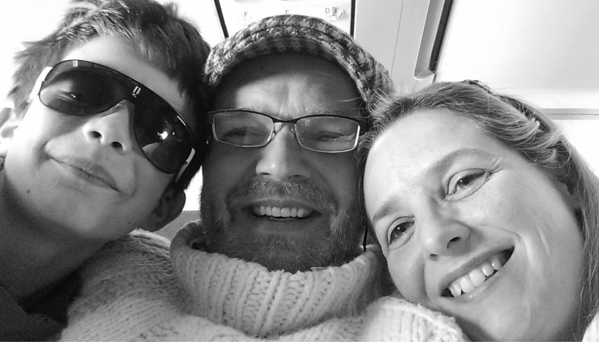
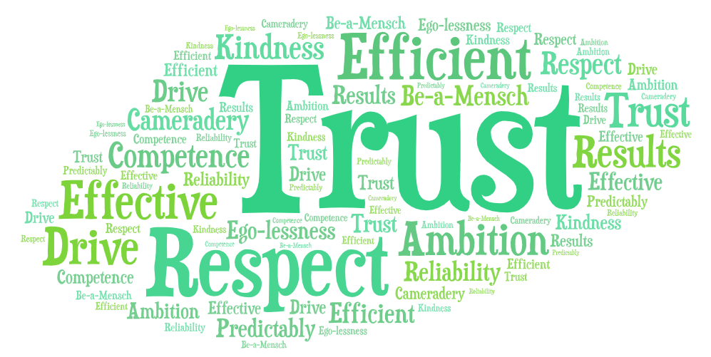
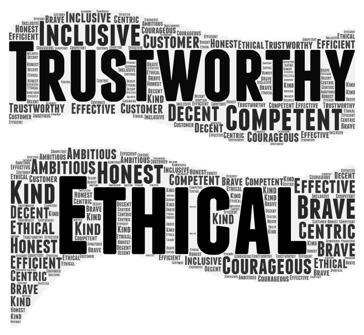
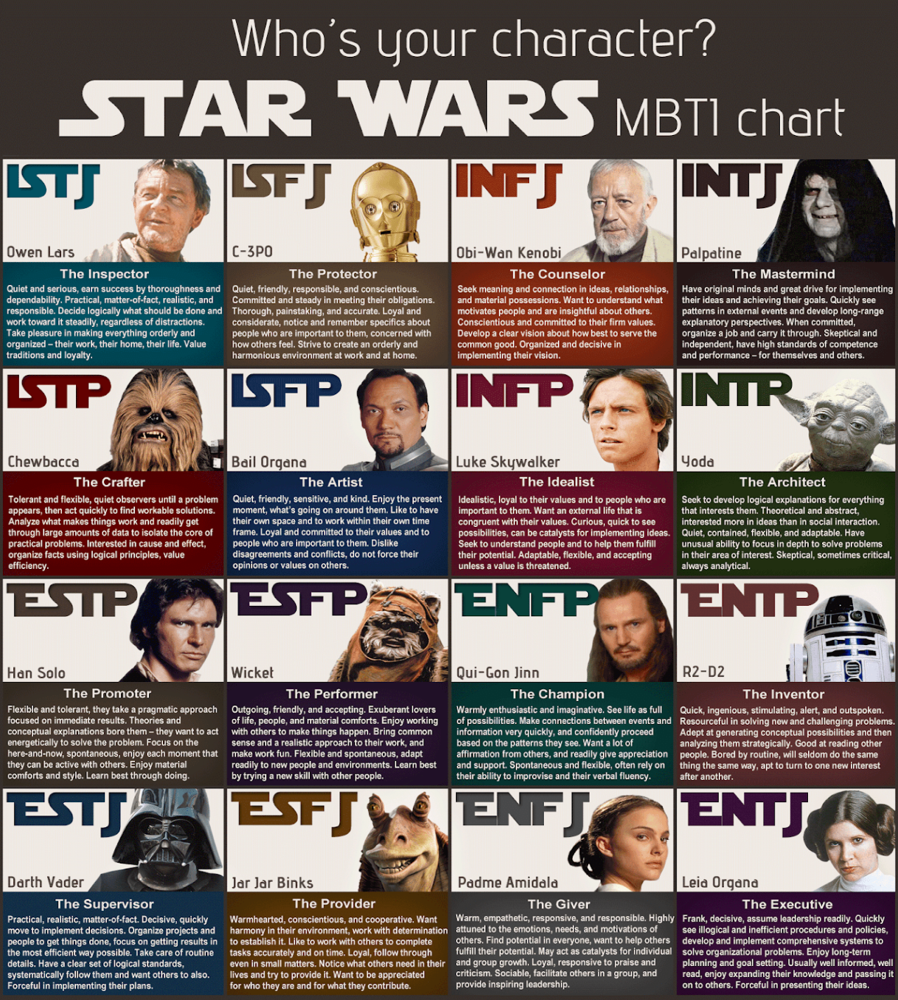
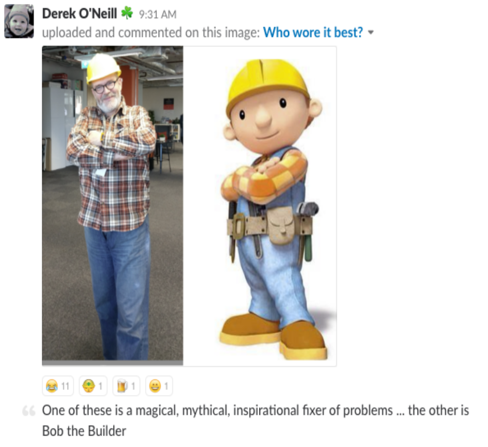
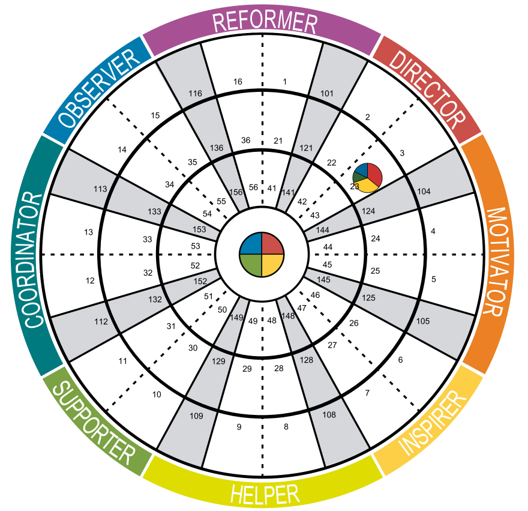
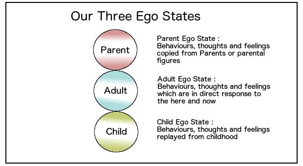
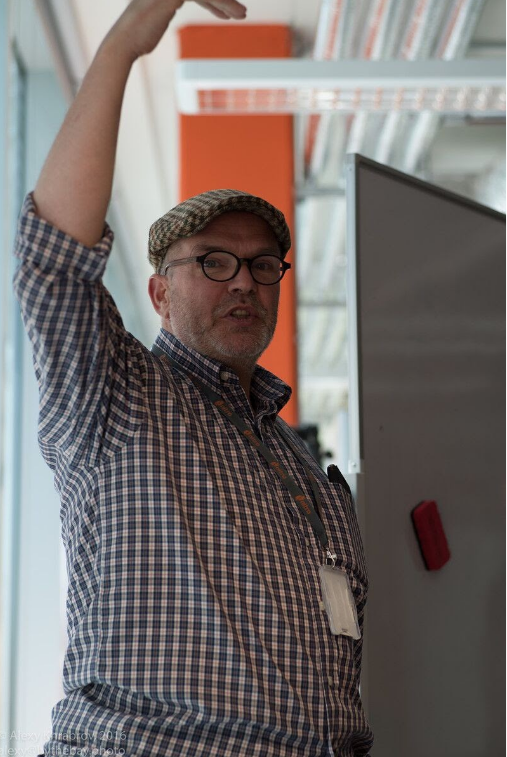
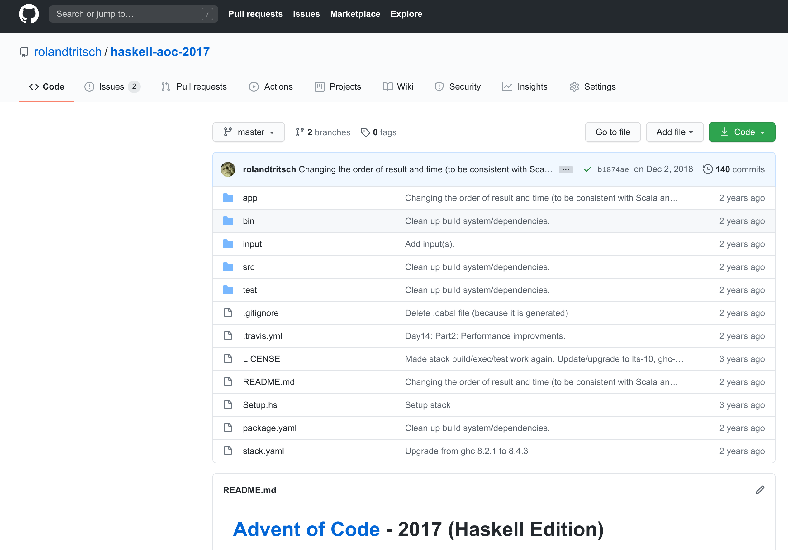

Roland
THE User Manual
Roland Tritsch
Created: 2024-11-01 Fri 12:30
User Manual?!?! Why?
To speed up the learning (how to work together) …
Shorten the time to get to an understanding how good and right looks like …
- Who is Roland?
- What does Roland like/dislike when working together?
- What I expect and what you can expect!
- How to help Roland, so that he can help you?
BTW … Do one for yourself!!!
Your Introduction
- What do you do?
- Why are you here?
- What is your superpower?
My Superpower is …
… that I am very good at helping people to discover and develop their superpower(s).
Who is Roland?

Manager
- Building functional teams and functional systems
- Making engineers grow and users smile
- Explorer of remote-first cultures
Software Craftsman
- Functional Programming
- SaaS Backends
- Shared-Nothing Micro-Services Architectures
- Single-Purpose Services
- Using events to propagate state
Husband & Father

Professional Background
- Degree in Computer Science
- Software Craftsman, Software Engineering Executive, …
- Builder/Runner of functional teams and functional systems (pun intended)
- Proponent of functional programming (Scala, Haskell, Kotlin, …)
- Explorer of extreme digital nomading and remote-first cultures
- IONA, Gilt, Nitro, Community, …
- Run teams that own large, distributed SaaS backends
Personal Background
- Born and raised in Germany
- Living in Ireland (for 20 years)
- Married to a greek woman (for 25 years)
- One (tri-lingual) (grown-up) son
- Like to code. Even in my spare time/while on vacation
- Like to hike. Like to meet people (preferably in a pub :))
What I value in people

What I value in organisations

I believe in …
- … people-first. Get good people and
unleashtheir superpowers. Make them grow and put value on CVs. Always. Every day - … purpose-first. You need to understand why we do what we do and why you do what you do. And you need to like it. You need to be able to connect our purpose to your personal mission/vision/purpose
- … the value of functional programming (low cost of ownership; specifically Scala and Haskell)
I believe in …
- … building balanced and sustainable engineering orgs (where people trust and respect each other; and no time and no energy and no money is wasted)
- … the value of remote-first (done right) as the next better way to build and run engineering orgs (up to ~100 engineers)
MBTI - Leia & Darth
- ENTJ & ESTJ
- Extroverted (strong)
- Thinking (strong)
- Judging (strong)
- Sensing/Intuition (50/50)
- The Executive & The Supervisor
- Princess Leia & Darth Vader

MBTI - Bob & Tom

DISC - Motivating Director

DISC - Strength …
- Sees innovation as a necessity
- Being different/unique is good/valueable
- Boundless energy. Multi-purpose weapon
- A natural go-getter with a great enthusiasm for life
DISC - Weaknesses …
- Leaps before he looks
- Tendency to see things more positive then they are
- Overly dismissive of negative feedback
- Being critical (in a good way) is perceived as being negative
- Doesn't always take time to hear others views
DISC - Possible Blindspots …
- He is seen to perform better when he reins in his boldness, energy and enjoyment of being in control to a level where other people take priority. He is a born entrepreneur who is constantly overselling his next great idea and attempting to generate support for it. He may rely on personal forcefulness and, if necessary, intimidation to achieve his aims
- As he values creativity and innovation, he sometimes ignores the standard way of doing something because it lacks originality
DISC - Ideal Environment …
- He continuously contributes to organisational improvement (building/developing people)
- Activities, variety and change are constantly taking place
- He can turn a vision (a big idea) into reality
Ego State
- Balanced (most of the time)
- Strong child ego
- CTO, playing, learning, taking risk, falling (and getting up again), curious, …

Leadership
Leadership comes down to believing so strongly in the future you want that your enthusiasm, confidence, and drive in getting there infects those around you and the reality of today transforms into that vision of tomorrow through shared work and sacrifice. - Max Levchin, CTO @ Paypal
Leadership
Leadership is the ability to inspire others to deliver on shared objectives - Jeff Weiner, CEO @ Linked-In
I am good at/I like to …
- Building and running functional teams and functional systems
- Making engineers grow (put value on CVs) and users smile (deliver value to customers)
- Find and articulate a mission that makes a difference, attract and retain great people and then … execute!
- Raising the bar!

(Naturally) I am/can be …
- … (too) action-oriented …
- … loud & obnoxious …
- … impatient & hot-tempered …
- … and I need to use some of my energy to moderate that!
Means …
… when I am running low on energy or when I am tired … sooner or later/occasionally … somebody has to sing a lullaby!!!
I (also) need help with …
- … diving into the details!
- … turning a strategy into tactics!
- … listening (talking too much)!
- … going slow (to go faster)!
- Judging too early/fast
- (Sometimes) Missing information
Expectations
You should always know why what you do matters. You should always feel a sense of purpose. You should always know what we are doing and why we are doing it
Yours & Mine
What you can expect from me and what I expect from you
- Trust and respect. Radical candor. Productive friction
- Say-what-you-do and do-what-you-say. Make promises and keep them (and if not … learn … and move on)
- Be a leader. Be an inspiration to others. Drive yourself and others
Yours & Mine
- Have a growth-mindset. Manage your ego. Grow. Make mistakes (once). Keep on trying to be(come) a better version of yourself (every day, month, year). Close the potential-gap (every day; for yourself and the company; be(come) the best version of yourself)
- Have (strong) opinions, weakly held
- Be decent. Be ambitious. Be competent
AMA

Appendix - (More of what) I like …
- To build relationships and organisations based on trust and respect
- Work-/Life-Harmony (I do not like Work-/Live-Balance)
- Grit, showing up, hard work (doing what's right, not what's easy/popular), …
- Talking to each other, not about each other, …
I like …
- No surprises
- I will miss the deadline next week vs. I will miss the deadline tomorrow
- Ownership & accountability
- Say what you do & Do what you say
- I f…ed-up … and here is what I learned and what I am going to do about it
I like …
- Being on time, being reliable, say-what-you-do/do-what-you-say, making promises and keeping them (and if not … appologize, learn … and move on), …
- Productive friction, disagree and commit, radical candor, …
- Do the right thing and do it right and do it right now
- Building a place where great engineers can do their best work
- Where … talent meets passion and purpose
- Where … mastery meets autonomy and purpose
- Where … accountability meets autonomy and authority
I like …
- Good hiring
- Nice/decent, humble/ego-less, intelligent people
- That like to solve problems (and are good at it)
- With good judgement (and a lot of common sense)
- And good desicion making skills (using groups of people) (and that are passionate about software engineering and writing good, maintainable code) (and that have a growth mindset)
I like …
- Strategic thinking/planning
- Develop a sense of direction
- … for the next N steps/time-units
- Execute on the first step/time-unit
- Rinse and repeat
- Develop a sense of direction
I like …
- Cameradery …
- we are in it together
- we have each others back
- … to be useful
- … to complement (not compete)
- be the oil in the gearbox
- be(come) the missing puzzle-piece
- Big/relevant/important ideas/projects/work
- … which (sometimes) makes me go into a direction where I try to boil the ocean.
I like …
- Progress over perfection
- Like/prefer to be the lowest performing team member in an A-team rather than the top performer in a B-team
- Headsets/Good-Audio
- … to be effective and efficient (I do not like waste of time, engergy and money; e.g. bad meetings)
- … decency, ambition and competence
I like …
- … being on-time (being professional)
- … being effective/efficient (do not waste time, money, energy (unnecessarily))
- … cameradery (a/the feeling of being in it together; building teams that trust and respect each other)
I like …
- … to be kind (not nice; embrace radical candor and productive
friction)
- Build safe places, where you can (respectfully) disagree with each other (but then also disagree-and-commit)
- … (wired) headsets (I do not need a headset, I can hear you well)
I like …
- … competence (expertise + experience + intelligence)
- … building beautiful, impactful things/systems
- … say what you do, do what you say (no surprises)
- … to try a lot and keep what works
- … to fail forward
I like …
- … people with a growth-mindset
- … poeple with no ego (or at least people, who know how to manage their ego)
I dislike …
- … making no mistakes (means we are not pushing hard enough)
- … making mistakes twice (means we are not learning fast enough)
- … when ego(s) (mine or others) get in the way of moving fast and/or doing something that is good and right
Appendix - (More about) Roland
I am a Software Craftsman
- Build and own/operate functional (minimal) systems, that solve a problem (that needs solving)
- Build with functional programming languages
- Build gardens, not jungles (managable cost of ownership)
I am a Software Craftsman
- My dad is a craftsman (toolsmith). I learned early in life …
- … that you plan, execute, clean/sharpen the tools, rinse and repeat
- … to sign my work (it needs to be beautiful; you need to be proud of it)
- … that the quality of the tools and material and the level of the craftmanship determines the quality of what you build
I am a Manager
- Building functional teams (were people trust and respect each other)
- Building (remote-first) places where great engineers can do there best work
- Help people to find/discover their superpower (everybody got one) and develop it
I am a Leader
- Find problems that need/deserve solving (make the planet a better place)
- Inspire others to deliver on shared objectives - Jeff Weiner
- Be strong. Be kind. Be happy
Little known fact

The three things that made me the man I am today
- Cycling
- The scholarship (Carl Duisberg Society)
- My wife and my son
Resources
Blogs/Thoughts
- Software Gardening and not hiting icebergs
- Fixing broken windows
- The Power of Why
- Functional Programming
- Synergy between Product and Engineering
- Build the right thing and build it right
- Understand what the customer wants/needs and complement it with what's possible
- Do not build faster horses
(Some) Books
- Man's Search for Meaning - Victor Frankl
- How To Be A Stoic - Massimo Pigliucci
- Clean Code - Robert C. Martin
- The Pragmatic Programmer - Andrew Hunt and David Thomas
- Building a MicroService - Sam Newman
- … more
I am …
- A worried and realistic optimist
- The nicest slave driver you have ever worked for
- WIP :)
- ???
I will …
- Keep on giving you work until you say stop
- And saying stop is totally acceptable
Buttons not to push …
- Try(ing) to manage, handle, manipulate, … me
- Instead … use the front door!
- (Unnecessarily) Waste … time, energy, money, …
- Because … I like to be effective/efficient (more than right and fast)
- Because … I like to work as hard as it needs to be (but not harder)
- (As a symbol) Not wearing a headset …
- Because … I perceive it as a lack of care (caring how hard it is to hear/understand you)
Appendix - Quotes
Leadership
Leadership comes down to believing so strongly in the future you want that your enthusiasm, confidence, and drive in getting there infects those around you and the reality of today transforms into that vision of tomorrow through shared work and sacrifice. - Max Levchin, CTO @ Paypal
Leadership
Leadership is the ability to inspire others to deliver on shared objectives - Jeff Weiner, CEO @ Linked-In
Leadership
If you're going through hell, don't stop walking. - Winston Churchill
Leadership
You cannot change the trajectory of a stationary object - Andrew O'Sullivan, VP Services @ IONA
Leadership
Never waste a good crisis - Winston Churchill, Prime Minister @ UK
Leadership
You either work/care for something or somebody - Roland Tritsch
Leadership
People before Process and Problem/Project/Product - Walt Brown
Leadership
Is somebody hurt? Did somebody die? No? Then we can fix it! - Walt Brown
Leadership
Never complain and never explain. - Benjamin Disraeli
Leadership
Ever tried? Ever failed? No matter! Try again!! Fail better!!! - Samuel Beckett
Leadership
80% of something good is better than a 100% of something bad - Roland Tritsch
Leadership
Do or do not do, there is no try! - Yoda
Leadership
The three pillars of success: Have a sense of direction and purpose. Hire great people. Execute well. - Roland Tritsch
Leadership
Successful people do not want to be successful, they want to become successful. - Roland Tritsch
Leadership
Be kind. Be strong. Be happy. - Mark (Braggy) Bragg
Leadership
Before you can lead, you have to learn how to follow! - ???
Leadership
Culture is what happens when you don't look! - ???
Leadership
FAST. GOOD. CHEAP. Choose any two. - Common Project Scheduling Mantra
Leadership
Simple things should be simple, complex things should be POSSIBLE. - ???
Leadership
Do it! Do it right!! Do it right now!!! - ???
Leadership
Give me the strength to change the things I can change, the tolerance to accept the things I cannot change and the wisdom to destinguish between the two. - ???
Leadership
Before software can be reusable it first has to be usable. - Ralph Johnson
Leadership
No plan survives first contact with the enemy! - Helmuth von Moltke the Elder
Leadership
I have a dream! - Martin Luther King
Leadership
Can we fix it? Yes, we can! - Bob the Builder
Leadership
Always be useful! - Thomas the Tank-Engine
Leadership
If you know your why, you can endure any how! - Nietzsche
Wisdom
Simple is hard - Rich Hickey, Inventor of Clojure
Wisdom
Some people wish it would happen, some people want it to happen, some people make it happen - ???
Wisdom
Give me the coffee and nobody gets hurt - ???
Wisdom
Love all, trust (and respect) a few, do wrong to none. - William Shakespeare
Wisdom
We are what we repeatedly do. Excellence, then, is not an act, but a habit. - Aristotle
Wisdom
Knowledge is to know that tomatos are not a vegtable, but a fruit. Wisdom is not to put them into a fruit salad. - Brian O'Driscoll, Outside Center @ IRFU
Appendix - My life in pictures
Roland

I am a Software Craftsman

I am a Manager

I am a Father and a Husband

The Extreme Digital Nomad

I am not (really) German

I used to cycle :)
Now I am hiking …

… and biking :)

My dad is one of my best friends
 |  |
(Despite my life-style)
I have only one broken bone
(but lots of scars :))